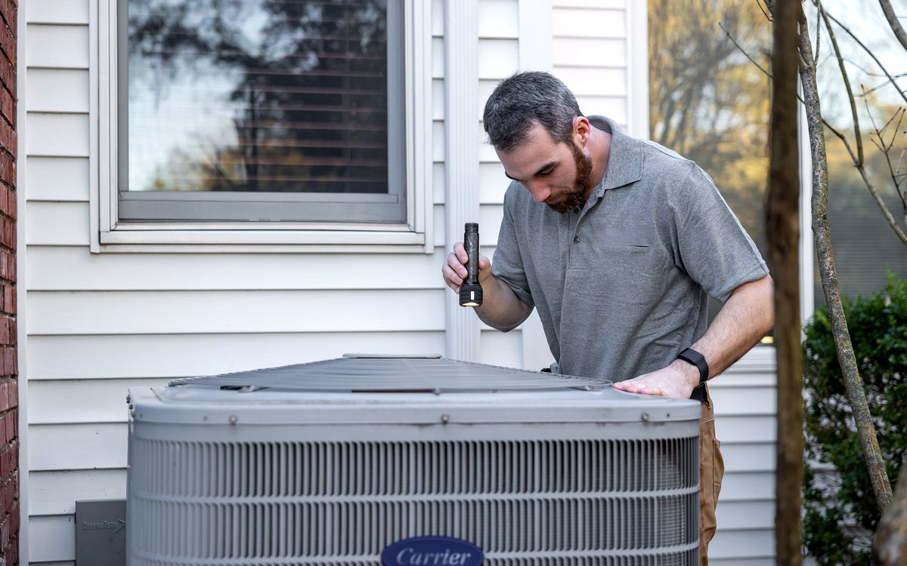

Searching for AC service near me in Sector 7 Reay Road? Coldway Comforts provides doorstep AC repair, maintenance, commercial AC service, cassette AC, tower AC, central AC and refrigerator service across Sector 7 Reay Road, Mumbai and Navi Mumbai.

AC servicing, filter cleaning, coil cleaning, gas check-up and cooling performance inspection.
Fast AC breakdown repair for split AC, window AC, inverter AC, cassette AC and ductable AC.
Professional AC installation, dismantling, shifting and copper piping setup.
AMC and preventive maintenance for homes, offices, shops, clinics, restaurants and commercial spaces.
AC gas leak checking, vacuuming, pressure testing and gas refilling support.
Assistance for buying new AC units with installation and service support.
For Sector 7 Reay Road, call Coldway Comforts with your building name, exact location, AC brand, AC type and cooling issue. Our service support covers regular AC servicing, AC repair, AC gas filling, cassette AC, tower AC, central AC, commercial AC maintenance and refrigerator cooling concerns.
We handle common cooling complaints for LG, Samsung, Daikin, Voltas, Blue Star, Carrier, Hitachi, Panasonic, Haier, Whirlpool, Godrej, Lloyd, Mitsubishi, Bosch and IFB units. Share your brand, model and issue while calling so the visit can be planned properly.
Choose any number to start chat with Coldway Comforts.
WhatsApp +91 98192 13075WhatsApp +91 96534 65441